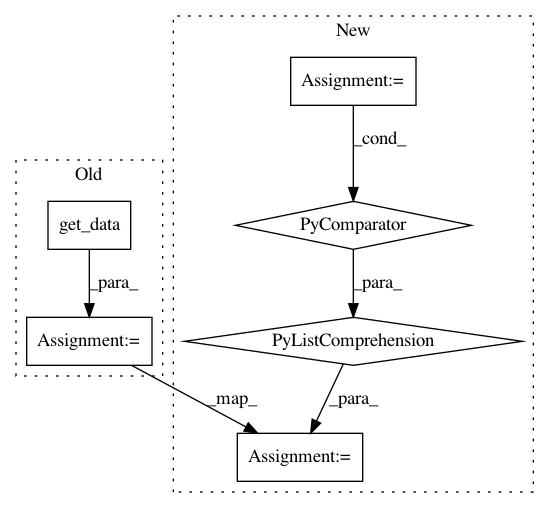

b0a92d6b0055b433d6246f96e3a2fc57499d8449,chaco/tools/pan_tool.py,PanTool,panning_mouse_move,#PanTool#Any#,167
Before Change
domain_min = -inf
if domain_max is None:
if self.restrict_to_data:
domain_max = max([source.get_data().max()
for source in mapper.range.sources])
else:
domain_max = inf
if (newlow <= domain_min) and (newhigh >= domain_max):
After Change
// values. As a first approximation, we"re just going to
// use a linear approximation, which works perfectly for
// linear mappers (which is used 99% of the time).
data = [arr for arr in
(source.get_data() for source in mapper.range.sources)
if arr.size > 0]
if domain_min is None:
if self.restrict_to_data:
domain_min = min([arr.min() for arr in data])
else:
In pattern: SUPERPATTERN
Frequency: 3
Non-data size: 6
Instances
Project Name: enthought/chaco
Commit Name: b0a92d6b0055b433d6246f96e3a2fc57499d8449
Time: 2014-09-29
Author: cfarrow@enthought.com
File Name: chaco/tools/pan_tool.py
Class Name: PanTool
Method Name: panning_mouse_move
Project Name: pantsbuild/pants
Commit Name: b5d41dacd073b4b3cc70e07d2244f9993dba7bee
Time: 2019-07-26
Author: hfuller@twitter.com
File Name: src/python/pants/backend/jvm/tasks/jvm_dependency_check.py
Class Name: JvmDependencyCheck
Method Name: execute
Project Name: pantsbuild/pants
Commit Name: 86fcbabefdaff591da5191a8a506beec9b24538b
Time: 2019-07-29
Author: hfuller@twitter.com
File Name: src/python/pants/backend/jvm/tasks/jvm_dependency_check.py
Class Name: JvmDependencyCheck
Method Name: execute